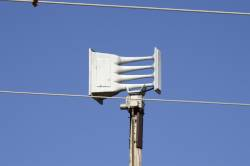
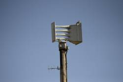
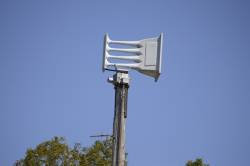
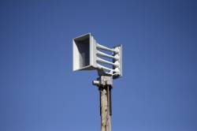
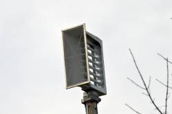

These are the sirens I have filmed over the past several years in the Tulsa/Broken Arrow area.
This project started in 2018, but only until recently have I acquired acceptable content.
Click a siren below to view its page:




